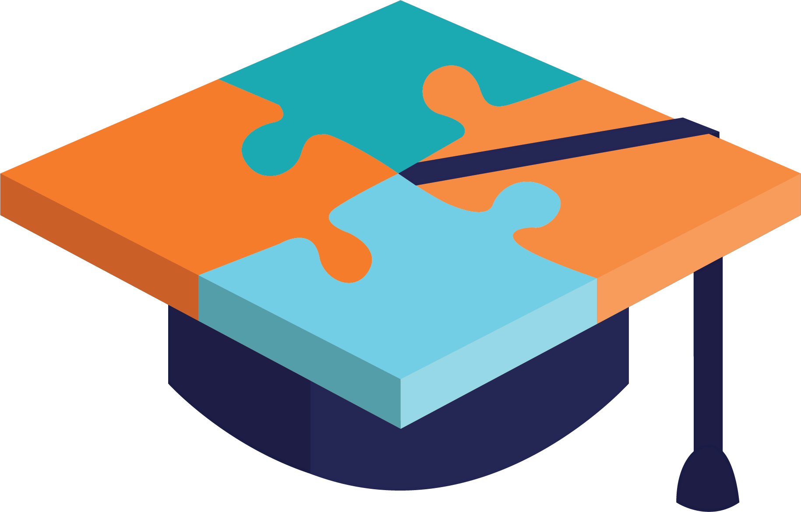

<!--
  Generated template for the BuscaPage page.

  See http://ionicframework.com/docs/components/#navigation for more info on
  Ionic pages and navigation.
-->
<ion-header>

  <ion-navbar hideBackButton>
    <ion-title>
      
    </ion-title>
  </ion-navbar>

</ion-header>


<ion-content padding class="busca">
  <ion-title class="busca-title">
    Selecione uma opção abaixo:
  </ion-title>
  <div>

    <button ion-button block (click)="materia()" class="busca-button">
      <ion-img class="button-image" src="../../assets/imgs/materias.png"></ion-img>
      Matérias
    </button>
    
    <button ion-button block (click)="universidade()" class="busca-button">
      <ion-img class="button-image" src="../../assets/imgs/universidades.png"></ion-img>
      Universidades
    </button>
    
    <button ion-button block (click)="cursos()" class="busca-button">
      <ion-img class="button-image" src="../../assets/imgs/cursos.png"></ion-img>
      Cursos
    </button>
    
    <button ion-button block (click)="pessoas()" class="busca-button">
      <ion-img class="button-image" src="../../assets/imgs/pessoas.png"></ion-img>
      Pessoas
    </button>
  </div>
</ion-content>
